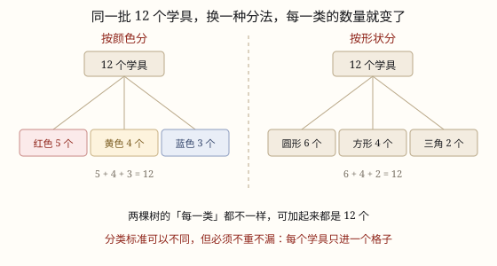

数据的收集、整理与分析
统计不是从画图开始的，是从一个问题开始的。想知道什么，才决定收集什么、按什么标准分类；分法可以不同，但不重不漏，合起来永远是同一批数据。
| 所属主题 | 数据的收集与整理 |
|---|---|
| 所属模块 | 统计与概率 |
| 课标学段 | 第二学段（3~4年级） |
| 核心素养 | 数据意识应用意识 |
教材定位
人民教育出版社《2024年版》
横跨二上第 1 单元「分类与整理」与三下第 5 单元「数据的收集与整理」：按标准分类与数据收集。
课标要求
| 统计与概率·数据分类 | 会对物体、图形或数据进行分类，初步了解分类与分类标准的关系，形成初步的数据意识。 印刷第 37 页 行为动词：了解 |
|---|---|
| 统计与概率·数据的收集、整理与表达 | 经历简单的数据收集和整理、描述和分析的过程，了解简单的收集数据的方法，会呈现数据整理的结果（例39）。 印刷第 38 页 行为动词：经历 |
| 统计与概率·数据的收集、整理与表达 | 通过对数据的简单分析，感受数据蕴含着信息，体会运用数据进行表达与交流的作用。 印刷第 38 页 行为动词：体验 |
说明
校长要在教学楼里加装直饮水机，装几台、装在哪一层，凭印象定不下来。要先弄清两件事：每层楼一天大概有多少人接水？一天里哪个时段最挤？问题一提出，要收集的数据就跟着定了——按楼层数人数、按时段数人数。统计从来不是先有一张图，是先有一个问题。
第一步：明确收集什么。调查对象是谁（全校学生，还是某一个年级）、什么时候（哪一天、哪个时段）、用什么办法（实地数、发问卷、网上查、称重）。对象、时间、方法定不下来，收上来的数就对不上口径：有人数是「一天」，有人数是「一节课」，混在一起没法用。
第二步：边收边记。用画「正」字的办法，一笔一画，五个一组。为什么是五个一组？因为人眼一眼能认出「一个正字」就是 5，最后数的时候不用一个个点，数几个正字、再看零头就够了。记录最怕两件事：漏记一个，或者同一个人被记了两次。
第三步：整理就是分类。把零散的记录按一个标准分组，数出每一类有多少。分类标准不是唯一的：一堆旧衣物可以按颜色分，也可以按材质分、按大小分；小区的垃圾可以按「厨余、可回收、有害、其他」分四类，也可以只按「可回收、不可回收」分两类。分法不同，每一类的数量就全变了（图 1）。
第四步：分析。比较哪一类多、哪一类少，想一想为什么会这样，再回到最初的问题上给建议。分析还有一条容易被忽略的边界：数据只能回答它被收集时想回答的问题。步数能说明这周走得多不多，说明不了「运动强度够不够」。
使用场景
校园生活：班级视力普查、同学上学方式调查、每天各时段接水人数——都是为了给学校的一个决定找依据。
自然现象：小区一天的垃圾分类称重，看哪一类最多、要不要增设某个投放点。
饮食与配比：食堂连续一周称剩饭量，找出哪一天、哪道菜剩得最多。
上学日常：手机里的步数、阅读打卡的分钟数，都是被自动记录下来的数据，整理后能看出自己的作息规律。
注意点
先想清目的，再动手收。目的不清就发问卷，收回来一堆用不上的数，白费工夫还容易得出错误结论。
问题要问得能回答。别问「你喜欢运动吗」，要问「你一周运动几次：0 次 / 1~2 次 / 3 次以上」。能落到格子里的问题，才是好问题。
一个人只能进一个格子。分类时最常出的错是「篮球」既算进「球类」又算进「课后服务」，同一份数据被数了两遍，总数就虚高。
分类标准定了就别中途换。前 20 个人按颜色分、后 20 个人按形状分，最后合起来什么也不是。
别只问身边的人。只调查自己小组 8 个人，得到的只是这 8 个人的情况，代表不了全班，更代表不了全校。
为什么是这样

图 1：同一批 12 个学具，按颜色分和按形状分，每一类的数都不一样，可加起来都是 12——分法变了，数据没变
算理推导
先看「问题怎么变成数据」。问题是「哪个时段接水最挤」，对应的数据就必须带「时段」这一栏；问题是「哪层楼人多」，数据就必须带「楼层」。问题里出现了什么，记录表上就要有什么，多收的用不上，少收的就答不了。
再看「为什么用正字记」。数的过程最怕漏和重，五个一组的正字把「计数」变成了「认形状」：一组一笔，写完五个正好一个正字，最后只要数正字的个数再乘 5，加上零头。这一步不是为了好看，是为了准。
然后看「分类为什么能变」。同一批 12 个学具，按颜色分是 5、4、3，按形状分是 6、4、2（图 1）。变的只是「怎么切这一刀」，被切的那一堆东西一个没多、一个没少。所以分类标准可以自由选，总数却不能变——这正是检查有没有出错的依据：各类加起来对不上原来的总数，一定是重了或漏了。
最后看「分析要回到问题」。把各类的数一比，得出「午休 20 分钟接了 300 人次、是其他时段的五倍」，这句话才回答得了「该不该加饮水机、加在哪」。数据本身不说话，是问题给了它方向。
动手实验
在班里做一次真调查：每人写下自己上学的主要方式（步行、公交、家长开车、骑车），组长用正字在黑板上一类一类记。记完先数总数，看是不是等于全班人数——不等就回头找是漏了还是重了。然后换一个标准重新分一次：把「步行」和「骑车」合成「自己走」，「公交」和「家长开车」合成「坐车」，再看两次数出来的结果。你会发现：四类变成两类，每一类的数都变大了，可加起来还是那么多人。
按场景的例题
例 1（场景：校园生活） 全班视力普查的分档统计
四(1)班 40 人查视力，结果是：5.0 及以上 22 人，4.8~4.9 有 12 人，4.8 以下 6 人。这三类的人数合起来是多少？和全班人数对得上吗？能提出什么建议？
解：把三类相加：22 + 12 + 6 = 40，正好等于全班人数，说明没有漏记也没有重复。三类的比是 22 : 12 : 6，视力不良的共 18 人，接近全班的一半。
答：合计 40 人，对得上。建议：视力不良的接近一半，可以申请调整座位轮换、增加户外活动时间；但「为什么近视」这个原因，这份数据答不了。
例 2（场景：自然现象） 小区一天的垃圾分类称重
某小区一天产生垃圾：厨余 9.5 千克、可回收物 3 千克、有害垃圾 0.5 千克、其他垃圾 7 千克。如果改成「可回收」和「不可回收」两分法，两类各是多少？两种分法矛盾吗？
解：四类合计 9.5 + 3 + 0.5 + 7 = 20 千克。改成两分法：可回收 3 千克；不可回收是剩下的全部，9.5 + 0.5 + 7 = 17 千克，也可以直接用 20 - 3 = 17。
答：可回收 3 千克，不可回收 17 千克。两种分法不矛盾：四类分得细，两类分得粗，总重量都是 20 千克——分类标准不同，数据本身没变。
例 3（场景：饮食与配比） 食堂一周的剩饭量
学校食堂周一到周五的剩饭量分别是 12、15、11、18、9 千克。哪一天剩得最多？在得出结论之前，还应该再收集什么数据？
解：比较五个数，18 最大，周四剩得最多；9 最小，周五最少。但「周四为什么多」这份数据答不了，得再收集：周四的菜谱是什么、那天上午最后一节是不是体育课、天气冷不冷。
答：周四剩 18 千克最多。要解释原因，还得补充菜谱、课程、天气等数据——只知道「多」，不知道「为什么多」，就改不了。
例 4（场景：上学日常） 手机里的一周步数
小舟手机记录的一周步数是 4200、5100、3800、6300、7200、9100、8600 步。这些数据能说明什么？不能说明什么？
解：能说明：周六走得最多（9100 步），周三最少（3800 步），周末两天明显高于上学日。不能说明：这些步数里有多少是「有效运动」，也说明不了他的运动强度够不够——慢慢走一天也能凑出很多步。
答：能看出这一周的活动量起伏，看不出运动质量。数据的用处有边界，越界的结论不能从这份数据里得出来。
常用推论
各部分数量之和等于总数；加起来对不上，就说明记录有重复或者有遗漏。
同一批数据换一个分类标准，每一类的数量都会变，但总数不变。
分类要「不重不漏」：每一份数据只能归入一类，而且必须有类可归。
调查的对象、时间、方法必须统一口径，否则数据没法合到一起。
数据只能回答收集它时想回答的问题，超出范围的问题要另收数据。
易错点
错小组 8 个人里有 5 个是走路来上学的，就说「全校大多数同学走路上学」。
为什么错8 个人是「样本」，样本太小又太像（同一个班、住得近），它的比例不能推及全校。
正确要说明全校情况，就得按年级、按班级抽足够多的人来调查，或者直接统计全校的门禁记录。
错统计同学参加的社团时，「李明」既算进了「球类」又算进了「课后服务」，最后一加总数比全班人数多。
为什么错两个分类口径重叠了，同一个人被数了两遍，违反了「不重」的要求。
正确先定一个标准：要么按「球类/艺术类/科技类」分，要么按「校内/校外」分，一个人只落进一个格子。
错用手机步数得出「我这一周运动量够了」的结论。
为什么错步数只记录走了多少步，不记录走得多快、心率多高，回答不了「运动强度」这个问题。
正确步数可以说活动量，运动强度要另收数据（比如连续快走的时间），两者不能互相顶替。
直观理解
整理数据像收拾书包：先想清楚按什么分——按科目分，还是按大小分。分法一定，格子就定了，每本书只能进一个格子。两种分法都对，可要是一半按科目、一半按大小，就会有两本书挤在一个格子里，还有格子空着——那就是「重」和「漏」。
先有问题后有数，边收边记画正字；分类标准先定牢，不重不漏才算齐。